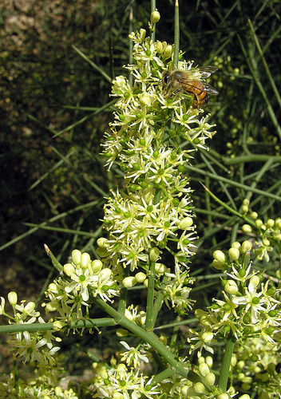

Koeberliniaceae
Allthorn Family
Koeberliniaceae is a monogeneric family of dicotyledonous flowering plants in the order Brassicales, containing only the genus Koeberlinia. It comprises just one or two species of intricately branched, thorny shrubs or small trees native to arid regions of the southwestern United States and Mexico. They are highly adapted to dry conditions, with green photosynthetic stems and highly reduced leaves.
Overview
The Koeberliniaceae family consists of a single genus, Koeberlinia, with the primary species being Koeberlinia spinosa (commonly known as allthorn, crown of thorns, or junco). These plants are highly distinctive, forming dense, impenetrable thickets of rigid, green, spine-tipped branches. They are well-adapted xerophytes, thriving in deserts, dry plains, and thorn scrub habitats in the southwestern U.S. (Texas to California) and northern Mexico.
The green stems are the primary photosynthetic organs, as the leaves are reduced to tiny, scale-like structures that fall off very early (caducous). The plant's formidable appearance comes from the fact that every branch terminates in a sharp thorn. Small, greenish-white flowers appear in clusters along the branches, followed by small, black berry fruits that are eaten by birds and other wildlife.
Phylogenetically, Koeberliniaceae is placed within the order Brassicales (the mustard order), part of the Rosid clade of eudicots. This placement is supported by molecular data and the presence of glucosinolates (mustard oil glycosides), a chemical characteristic common to many families in this order.
Quick Facts
- Scientific Name: Koeberliniaceae Engl.
- Common Name: Allthorn Family
- Number of Genera: 1 (Koeberlinia)
- Number of Species: 1 (or 2, depending on taxonomy)
- Distribution: Southwestern United States and Northern Mexico
- Evolutionary Group: Eudicots - Rosids - Malvids - Brassicales
Key Characteristics
Growth Form and Habit
Intricately branched, rigid shrubs or small trees, forming dense thickets. Stems are green, photosynthetic, and terminate in sharp thorns.
Leaves
Leaves are highly reduced to small, scale-like structures (less than a few mm long), alternate, simple, and quickly deciduous (caducous). Stipules are minute or absent. Photosynthesis is primarily carried out by the green stems.
Inflorescence
Flowers are borne in short, axillary racemes or fascicles (clusters) along the thorny branches.
Flowers
Flowers are small, bisexual, actinomorphic (radially symmetrical), and typically 4-merous. Key features include:
- Calyx: 4 small, free sepals.
- Corolla: 4 free petals, usually greenish-white or yellowish.
- Androecium: Typically 8 stamens in two whorls of 4, distinct, inserted on a nectar disc.
- Nectar Disc: An annular nectar disc is present.
- Gynoecium: Ovary is superior, composed of 2 fused carpels, typically forming a single locule (or appearing so) with parietal or basal placentation (usually 2-few ovules). A single short style with a capitate or slightly 2-lobed stigma is present.
Fruits and Seeds
The fruit is a small, globose berry, typically black when mature, containing 1-few seeds.
Chemical Characteristics
The family produces glucosinolates (mustard oil glycosides), characteristic of the order Brassicales.
Field Identification
Identifying Koeberliniaceae (Koeberlinia spinosa) is usually straightforward due to its unique appearance:
Primary Identification Features
- Habit: Dense, intricately branched shrub or small tree composed almost entirely of green, thorny stems.
- Leaves: Extremely reduced, scale-like, and quickly falling (often appearing leafless).
- Flowers: Small, 4-merous, greenish-white, clustered along branches.
- Stamens: Typically 8.
- Ovary Position: Ovary is superior.
- Fruit: Small, black berry.
- Habitat: Arid/semi-arid regions (deserts, thorn scrub) of SW USA/Mexico.
Secondary Identification Features
- Branching Pattern: Intricate and rigid, forming dense thickets.
- Flower Clusters: Short racemes or fascicles in branch axils.
Seasonal Identification Tips
- Year-round: The thorny green stems and overall habit are diagnostic at any time.
- Spring/Summer: Flowering period; look for small greenish-white flowers along the stems.
- Late Summer/Fall: Fruiting period; look for small, black berries.
Common Confusion Points
Koeberlinia might be confused with other thorny, desert shrubs, but its combination of features is unique:
- Other Thorny Shrubs (e.g., some Fabaceae like Prosopis, some Rhamnaceae like Ziziphus, some Asteraceae like Tetradymia): These typically have conspicuous leaves (even if small or drought-deciduous), different flower structures (e.g., papilionaceous flowers in Fabaceae, 5-merous flowers in Rhamnaceae), and different fruit types (legumes, drupes, achenes). They generally lack the combination of photosynthetic stems and extremely reduced scale-like leaves.
- Cactaceae (e.g., Cylindropuntia - chollas): Cacti are stem succulents with spines arising from areoles, usually lack true leaves (or have succulent leaves in some groups), and have flowers with numerous tepals/stamens and inferior ovaries.
- Fouquieriaceae (e.g., Fouquieria splendens - Ocotillo): Ocotillo has thorny stems but also produces distinct, larger leaves (primary leaves fall, secondary leaves develop from petioles) and has showy red tubular flowers in terminal clusters. Belongs to Ericales.
Field Guide Quick Reference
Look For:
- Rigid shrub/tree of green, thorny stems
- Leaves minute, scale-like, deciduous
- Flowers small, 4-merous, greenish-white
- 8 stamens
- Superior ovary
- Fruit a small, black berry
Key Variations:
- Usually only one species recognized (K. spinosa), variation mostly in size/density.
Notable Examples (Genus Koeberlinia)
The family is monogeneric and often considered monospecific.

Koeberlinia spinosa
Allthorn / Crown of Thorns / Junco
The primary species representing the family. A densely branched, thorny shrub or small tree of desert environments in the southwestern US and northern Mexico. Its green stems perform photosynthesis, while leaves are reduced to tiny scales. Produces small flowers and black berries.
Phylogeny and Classification
Koeberliniaceae is placed in the order Brassicales, which belongs to the Malvid clade within the Rosids. This order is characterized by the frequent production of glucosinolates (mustard oil glycosides) and includes well-known families like Brassicaceae (mustards), Capparaceae (capers), and Caricaceae (papayas).
The phylogenetic position of Koeberliniaceae within Brassicales was uncertain for some time due to its highly specialized morphology. Molecular studies place it as one of the earlier diverging lineages within the order, potentially sister to a clade containing Bataceae and Salvadoraceae, or sister to the core Brassicales group (which includes Brassicaceae, Capparaceae, Cleomaceae). Its exact position relative to other basal Brassicales families is still being refined.
Position in Plant Phylogeny
- Kingdom: Plantae
- Clade: Angiosperms (Flowering plants)
- Clade: Eudicots
- Clade: Rosids
- Clade: Malvids
- Order: Brassicales
- Family: Koeberliniaceae
Evolutionary Significance
Koeberliniaceae, despite being very small, is significant for several reasons:
- Extreme Xerophytic Adaptation: Represents a remarkable example of adaptation to arid environments through stem photosynthesis and leaf reduction, evolved independently from similar strategies in groups like Cactaceae.
- Basal Brassicales Lineage: Its position as an early diverging lineage within Brassicales provides insights into the ancestral traits and early evolution of this chemically distinct order (e.g., the origin of glucosinolates).
- Morphological Uniqueness: Its highly specialized morphology makes it a distinct and easily recognizable component of the North American desert flora.
- Monotypic Status: The existence of a monogeneric (and nearly monospecific) family highlights phylogenetic isolation and unique evolutionary pathways.